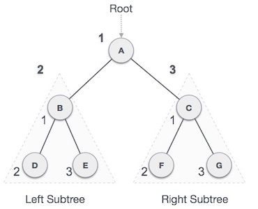

-
Inorder(root)
- Traverse the left sub-tree, (recursively call Inorder(root -> left).
- Visit and print the root node.
- Traverse the right sub-tree, (recursively call Inorder(root -> right).
Different types of traversals in a binary tree
Traversal is a process to visit all the nodes of a tree and may print their values too. Because, all nodes are connected via edges (links) we always start from the root (head) node. That is, we cannot randomly access a node in a tree. There are three ways which we use to traverse a tree −
- In-order Traversal
- Pre-order Traversal
- Post-order Traversal

Generally, we traverse a tree to search or locate a given item or key in the tree or to print all the values it contains.
In-order Traversal
For binary search trees (BST), Inorder Traversal specifies the nodes in non-descending order. In order to obtain nodes from BST in non-increasing order, a variation of inorder traversal may be used where inorder traversal is reversed.
Example

Try it yourself
Pre-order Traversal
Preorder traversal will create a copy of the tree. Preorder Traversal is also used to get the prefix expression of an expression.
-
Preorder(root)
- Visit and print the root node.
- Traverse the left sub-tree, (recursively call Preorder(root -> left).
- Traverse the right sub-tree, (recursively call Preorder(root -> right).
Example
Try it yourself
Post-order Traversal
Postorder traversal is used to get the postfix expression of an expression given.
-
Postorder(root)
- Traverse the left sub-tree, (recursively call Postorder(root -> left).
- Traverse the right sub-tree, (recursively call Postorder(root -> right).
- Visit and print the root node.
Example

Try it yourself
Euler Traversal
Euler tour is defined as a way of traversing tree such that each vertex is added to the tour when we visit it (either moving down from parent vertex or returning from child vertex). We start from root and reach back to root after visiting all vertices. It requires exactly 2*N-1 vertices to store Euler tour.
Given an undirected tree presented as a set of edges, the Euler tour representation (ETR) can be constructed in parallel as follows:
- We construct a symmetric list of directed edges:
- For each undirected edge {u,v} in the tree, insert (u,v) and (v,u) in the edge list.
- Sort the edge list lexicographically. (Here we assume that the nodes of the tree are ordered, and that the root is the first element in this order.)
- Construct adjacency lists for each node (called next) and a map from nodes to the first entries of the adjacency lists (called first):
- For each edge (u,v) in the list, do in parallel:
- If the previous edge (x,y) has x ≠ u, i.e. starts from a different node, set first(u) = (u,v)
- Else if x = u, i.e. starts from the same node, set next(x,y) = (u,v)
Example

Try it yourself
Level-order Traversal
Level order traversal of a tree is breadth first traversal for the tree.
- Create empty queue and push root node to it.
- Do the following when queue is not empty
- Pop a node from queue and print it
- Push left child of popped node to queue if not null
- Push right child of popped node to queue if not null